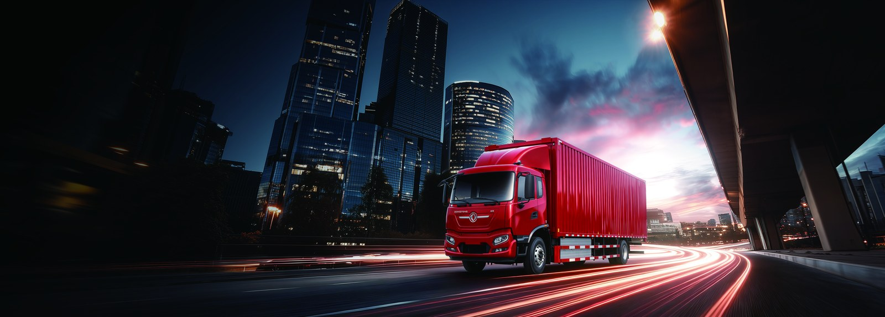

The Dar es Salaam corridor is the freight spine of Tanzania, moving containers and bulk goods between the port, the inland depots and the neighbouring countries of Zambia and the DRC. Long-haul line-haul needs power, range and reliable charging, and the TE9L long-haul electric tractor delivers with a 510 kW LvKong permanent magnet motor and a large CATL LFP pack sized for regional haulage. Fleet planners following the Tanzania electric truck market will find the TE9L the strongest electric prime mover available from our export range for cross-border work.
Line-haul tractors run at sustained motorway speed with heavy gross combination weights, so they need both power and energy. The TE9L 510 kW motor holds cruising speed on the gentle grades of the central corridor and recovers energy on every descent and slowdown. Replacing a diesel prime mover cuts fuel spend on a route where diesel can cost 0.90-1.20 USD per litre, and it removes exhaust from congested port approaches. For Tanzanian operators running fixed schedules between known nodes, the duty profile is predictable enough to plan charging stops with confidence.
| Parameter | TE9L value |
|---|---|
| Battery chemistry | CATL LFP |
| Motor power | LvKong permanent magnet, 510 kW |
| Typical range | 200-350 km line-haul |
| Fast charge 20-80 percent | 60-90 minutes |
| Battery warranty | 8 years / 4,500 cycles |
| FOB price band | 110,000-140,000 USD |
A regional tractor covering 300-450 km per day can stay inside one or two charges depending on the load. At 1.3-1.6 kWh per km loaded, a large LFP pack gives 200-350 km of real range, and a 60-90 minute DC top-up at a corridor charging hub restores the midday portion. The liquid-cooled battery maintains the 25-35 C operating window in Tanzanian heat, and the 8-year or 4,500-cycle warranty covers the asset through its finance term. Planners should site chargers at the port, at the Dodoma turn-off and at the border depots to keep the fleet moving.
| Cost line | Diesel tractor | TE9L EV truck |
|---|---|---|
| Energy per 100 km | 38-48 L diesel | 130-160 kWh |
| Energy cost per 100 km | 34-58 USD | 10-32 USD |
| Daily cost at 400 km | 136-232 USD | 40-128 USD |
| Service points | engine, DPF, coolant | motor, brakes |
| Annual saving | base | 30,000-70,000 USD |
Diesel line-haul tractors burn 38-48 litres per 100 km under a full combination weight. At 0.90-1.20 USD per litre that is 34-58 USD per 100 km. The TE9L draws 1.3-1.6 kWh per km, and at 0.08-0.20 USD per kWh the energy cost is 0.10-0.32 USD per km equivalent. Over a 400 km day the electric tractor saves 90-200 USD, and the removal of diesel engine service adds further margin that pays back the price premium within the finance period on high-mileage contracts.
Corridor work means dust, heat and long hours, so the TE9L seals its CATL LFP pack to IP67 and cools it actively to keep cells in the 25-35 C band even when ambient heat climbs above 35 C. LFP chemistry is stable and resists degradation across deep cycles, which supports the 8-year or 4,500-cycle warranty. Operators report that the quiet cab and the lack of engine vibration reduce fatigue on the long run to the border, improving safety and turnover on multi-day trips.
Tanzania imports heavy tractors through the port of Dar es Salaam, and the landed cost depends on the HS code, duty and the SADC or EAC preferences that may apply. Shaanxi Fenghan Trading supplies FOB documents, marine insurance and a parts kit for the first year. Buyers receive remote diagnostics and on-site commissioning, and the CATL battery warranty protects against early capacity loss. We help prepare the technical file for Tanzania Bureau of Standards clearance before the vessel departs.
Long-haul drivers must manage a high-power electric driveline and plan charging into rest breaks. The TE9L training covers smooth high-torque pull-away with a full trailer, regeneration on long descents and the high-voltage isolation procedure after a fault. Because the cab is quiet, drivers should keep the radio low and watch mirrors more carefully. Our package includes a printed English and Swahili checklist so every shift starts with a walk-around and a confirmed battery state of charge before crossing into Zambia or the DRC.
The Dar es Salaam corridor only works as an electric route if chargers exist at the right nodes. We help operators plan a hub at the inland container depot, a second at the Dodoma turn-off and a third near the Zambia or DRC border, each with a 240 kW DC unit and a solar canopy. Because the TE9L draws 1.3-1.6 kWh per km, a 400 km day needs about 520-640 kWh, which a 60-90 minute top-up covers during the legal rest break. Building the corridor with the first fleet order de-risks the second, and we supply the charger specification so local electricians install to the same standard at every stop.
Lenders price trucks on resale risk, and battery electric tractors hold value well because the 510 kW motor has few wearing parts and the CATL LFP pack is warranted for 8 years or 4,500 cycles. A financed TE9L therefore attracts terms close to a premium diesel prime mover, and the fixed 0.08-0.20 USD per kWh energy cost makes the repayment model stable against diesel price shocks. We provide a documented battery state-of-health report at each service so the asset value is visible to a buyer or a refinancer when the operator upgrades the fleet three years later.
Long-haul drivers are scarce on the corridor, and the TE9L helps keep them. The silent cab, the absence of vibration and the smooth electric torque reduce fatigue on the run to the border, and the pre-departure night charge means the truck is always full at the start of a shift. Operators report lower sickness and fewer incidents on electric tractors, which cuts turnover cost. Our training package includes the cross-border paperwork checklist and the high-voltage isolation drill, so a new driver is productive and safe within a single day of instruction.
Every TE9L streams energy per km, state of charge and fault codes to a central dispatch screen, so a Tanzanian operator sees the whole corridor fleet at a glance. The data exposes harsh acceleration, overloaded combinations and chargers that underperform, and it confirms the 1.3-1.6 kWh per km line-haul figure on each trip. Over a month this visibility typically trims 5-10 percent off energy use, and the same log supports the battery warranty by proving the pack stayed inside the 25-35 C window and the 4,500-cycle limit across the border runs.
Share your daily kilometres, gross combination weight and depot power with our sales team, and we will size the pack, design the corridor charging hubs and quote FOB Dar es Salaam. Volume buyers get staged delivery, fixed parts pricing and on-site support. The TE9L long-haul electric tractor is available for pilot and full fleet orders, and the Tanzania electric truck market is ready for clean regional haulage. Contact Shaanxi Fenghan Trading Co., Ltd by WhatsApp at +86 153 1943 1311 or by email at sales@fenghan-trade.com to begin today.
Ready to electrify your fleet? Contact Shaanxi Fenghan Trading — authorized Dongfeng EV truck exporter. WhatsApp: +86 153 1943 1311 | Email: sales@fenghan-trade.com | dongfengevtrucks.com
🌐 Our Network: Fenghan Trade (SAGMOTO/SHACMAN Truck Export) · 4x2 6x4 tractor truck prime mover